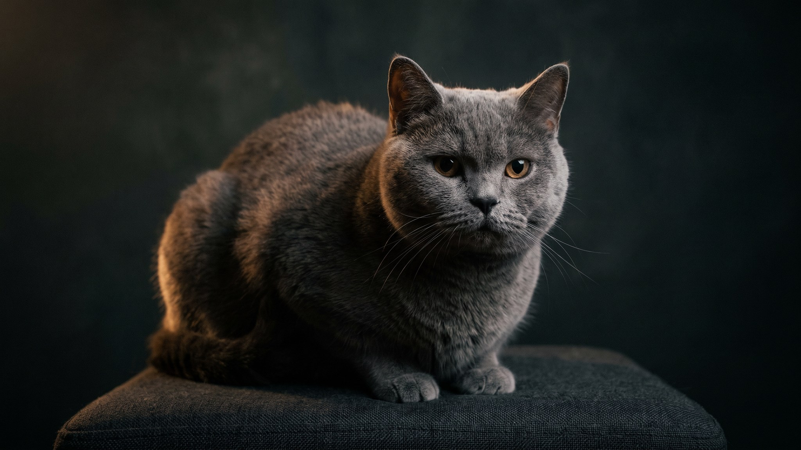

Британская кошка прибавляет вес зимой незаметно. Порода флегматична от природы, а с приходом холодов двигается ещё меньше. Разбираем, как оценить упитанность по пальпации, скорректировать зимнюю порцию и сохранить активность кошки без жёстких ограничений в еде.
🐾 Всё о вашем питомце — в одном приложении
AI-ветеринар, дневник здоровья, напоминания об уходе и прививках. Бесплатно, в Telegram и MAX.
Установить AnimaLife → Открыть в MAX →
У вас iPhone? AnimaLife есть в App Store
Британцы массивны и медлительны по природе. Им нужно меньше калорий, чем активным породам той же массы. Зимой кошка проводит больше времени на лежанке и тратит меньше энергии. Порция остаётся прежней, а расход падает.
Самцы крупнее: норма 4–8 кг, у самок 3–5 кг. Эти цифры дают только общий ориентир: внутри каждой кошки нормальный вес нужно определять по состоянию, а не по таблице. Два кота одной массы могут выглядеть по-разному в зависимости от типа телосложения.
Шкала BCS (Body Condition Score): от 1 до 9, норма 4–5. Её используют ветеринары, и её можно применять дома без весов.
Нащупать рёбра важнее, чем взвешивать. У британцев плотная шерсть и массивный костяк, по виду сложно определить реальную кондицию. Пальпация даёт точнее.
Снизьте суточную порцию на 10–15% от нормы на упаковке, если кошка явно меньше двигается и BCS ближе к 6. Это небольшое изменение, не голодовка. Следите за весом раз в 2 недели: снимайте показания на одних и тех же весах в одно время.
Два правила, которые стоит соблюдать:
Взвешивание раз в две недели помогает поймать тенденцию раньше, чем она станет проблемой.
Игровые сессии по 10–15 минут два раза в день помогают держать мышечный тонус и расходовать лишние калории. Британцы охотно играют с удочками и мышками на верёвке. Важно запускать игру самому, а не ждать инициативы от кошки.
Обратитесь, если кошка потеряла или набрала больше 300–400 г за месяц без смены рациона, стала пить заметно больше или меньше, или отказалась от привычной активности без видимой причины. Резкие изменения в весе и питьевом поведении требуют осмотра, а не коррекции порции дома.
🐾 Спросите AI-ветеринара о вашей кошки
AnimaLife отвечает на вопросы о кошках и собаках круглосуточно, ведёт дневник здоровья и напоминает о прививках. Бесплатно, без записи.
Открыть AnimaLife → Открыть в MAX →
У вас iPhone? AnimaLife есть в App Store
🐾 Понравился разбор?
Подпишитесь на канал — каждый день разбираем по одному тревожному симптому у кошек и собак: что в пределах нормы, а когда пора к врачу. Подпишитесь, чтобы не пропустить разбор, который может спасти здоровье вашего питомца.
Материал носит информационный характер и не заменяет очную консультацию ветеринара.